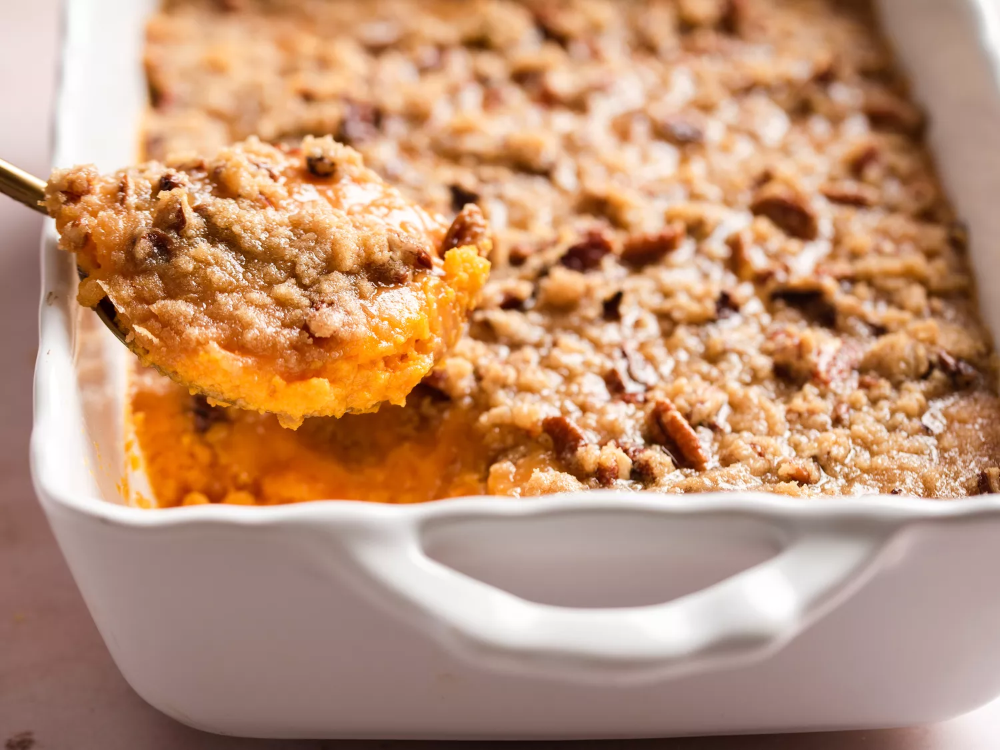

casserole recipe
link back to homepage

Description
casserole with peacan topping, very good for thanksgiving
Ingredients
- sweet potatos
- eggs
- white sugar
- milk
- vanilla extract
- salt
Recipe Steps
- cook and mash the sweet potatos
- mix Ingredients
- sprinkle topping on the sweet potato
- bake until light brown